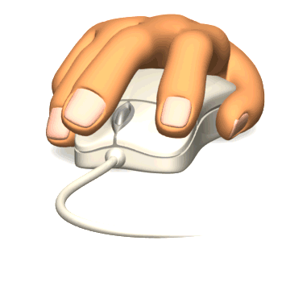

Click do Mouse
O click do mouse é uma das ações mais simples e comuns na interação do usuário com um computador. Ele consiste em pressionar um dos botões do mouse, geralmente o botão esquerdo, e soltá-lo rapidamente.
Os clicks do mouse são usados para realizar diversas tarefas, como selecionar um item na tela, abrir um menu, executar um programa, entre outras.
Clique no botão abaixo: